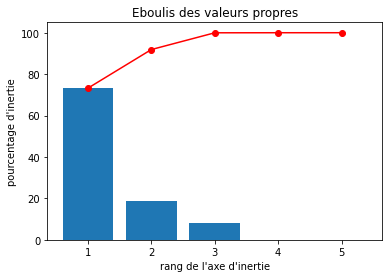
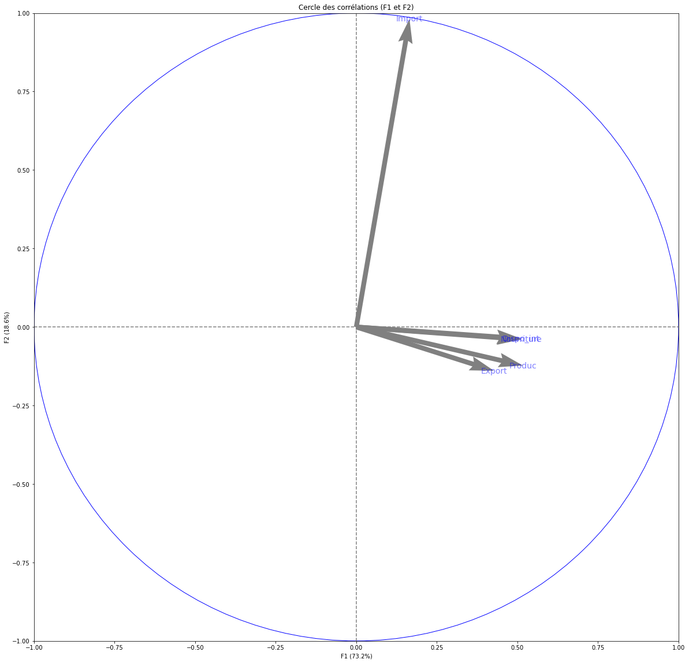
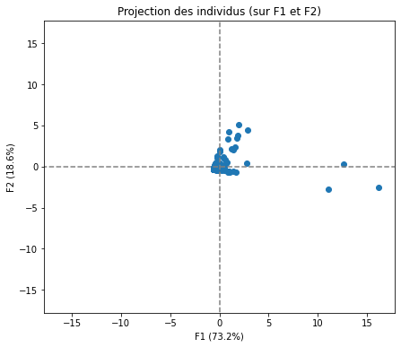
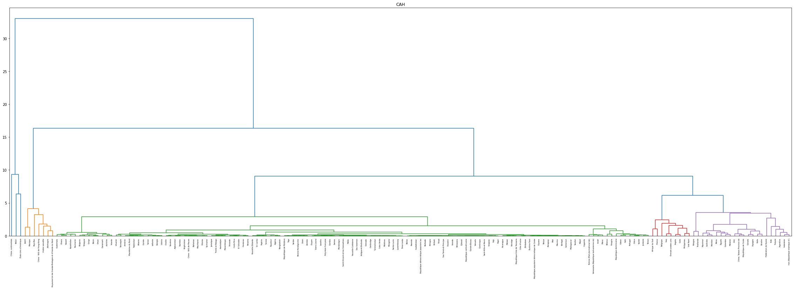
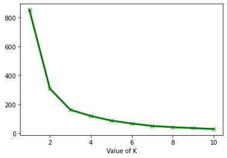
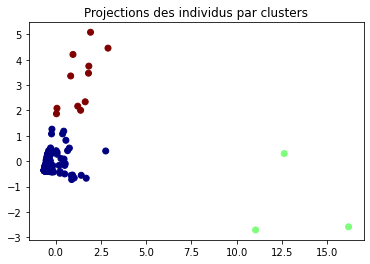
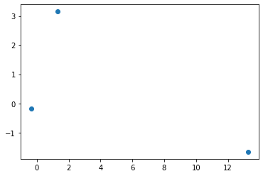
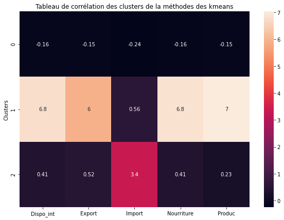

Chez La Poule qui Chante, entreprise agroalimentaire française, nous envisageons une expansion à l'international. Mon manager, Patrick, m'a confié une mission d'analyse pour identifier les groupes de pays favorables à l'exportation de nos produits avicoles.
Je bénéficie d'une grande autonomie pour choisir les données à analyser, que ce soit à partir des données de la FAO ou d'autres sources open data, pour utiliser des méthodes d'analyse comme la classification ascendante hiérarchique et les k-means.
import pandas as pd
import numpy as np
import matplotlib.pyplot as plt
import seaborn as sns
from sklearn.metrics import davies_bouldin_score
from sklearn.cluster import KMeans
import statsmodels.api as sm
from scipy.cluster.hierarchy import dendrogram, linkage, fcluster
import scipy.cluster.hierarchy as sch
from sklearn import metrics
from sklearn import decomposition
from sklearn import preprocessing
from functions import *
pop = pd.read_csv("Population_2000_2018.csv")
dispo_ali = pd.read_csv("DisponibiliteAlimentaire_2017.csv")
# on vérifie les données;
pop.describe()
| Code zone | Code Élément | Code Produit | Code année | Année | Valeur | |
|---|---|---|---|---|---|---|
| count | 4411.000000 | 4411.0 | 4411.0 | 4411.000000 | 4411.000000 | 4.411000e+03 |
| mean | 132.202902 | 511.0 | 3010.0 | 2009.068238 | 2009.068238 | 2.963004e+04 |
| std | 75.854840 | 0.0 | 0.0 | 5.481539 | 5.481539 | 1.238029e+05 |
| min | 1.000000 | 511.0 | 3010.0 | 2000.000000 | 2000.000000 | 7.850000e-01 |
| 25% | 68.000000 | 511.0 | 3010.0 | 2004.000000 | 2004.000000 | 3.921890e+02 |
| 50% | 132.000000 | 511.0 | 3010.0 | 2009.000000 | 2009.000000 | 4.764741e+03 |
| 75% | 195.000000 | 511.0 | 3010.0 | 2014.000000 | 2014.000000 | 1.821548e+04 |
| max | 299.000000 | 511.0 | 3010.0 | 2018.000000 | 2018.000000 | 1.427648e+06 |
pop.isnull().sum()
dispo_ali.describe()
dispo_ali.isnull().sum()
pop :
Code Domaine 0
Domaine 0
Code zone 0
Zone 0
Code Élément 0
Élément 0
Code Produit 0
Produit 0
Code année 0
Année 0
Unité 0
Valeur 0
Symbole 0
Description du Symbole 0
Note 4153
dtype: int64
dispo_ali :
| Code zone | Code Élément | Code Produit | Code année | Année | Valeur | |
|---|---|---|---|---|---|---|
| count | 176600.000000 | 176600.000000 | 176600.000000 | 176600.0 | 176600.0 | 176600.000000 |
| mean | 125.474740 | 3810.052894 | 2628.778545 | 2017.0 | 2017.0 | 210.554918 |
| std | 72.941699 | 2211.790089 | 91.993247 | 0.0 | 0.0 | 4762.047787 |
| min | 1.000000 | 645.000000 | 2511.000000 | 2017.0 | 2017.0 | -10388.000000 |
| 25% | 63.000000 | 684.000000 | 2556.000000 | 2017.0 | 2017.0 | 0.000000 |
| 50% | 120.000000 | 5142.000000 | 2612.000000 | 2017.0 | 2017.0 | 0.120000 |
| 75% | 188.000000 | 5301.000000 | 2732.000000 | 2017.0 | 2017.0 | 8.462500 |
| max | 276.000000 | 5911.000000 | 2899.000000 | 2017.0 | 2017.0 | 758548.000000 |
isnull :
Code Domaine 0 Domaine 0 Code zone 0 Zone 0 Code Élément 0 Élément 0 Code Produit 0 Produit 0 Code année 0 Année 0 Unité 0 Valeur 0 Symbole 0 Description du Symbole 0 dtype: int64
dispo_ali = dispo_ali[["Zone","Code zone", "Élément","Code Élément", "Produit","Code Produit", "Année", "Unité","Valeur"]]
pop = pop[["Zone","Code zone", "Produit", "Année", "Valeur" ]]
# on créer notre fusion
tableau = pd.merge(dispo_ali, pop, on= ["Année", "Code zone"])
| Zone_x | Code zone | Élément | Code Élément | Produit_x | Code Produit | Année | Unité | Valeur_x | Zone_y | Produit_y | Valeur_y | |
|---|---|---|---|---|---|---|---|---|---|---|---|---|
| 0 | Afghanistan | 2 | Production | 5511 | Blé et produits | 2511 | 2017 | Milliers de tonnes | 4281.0 | Afghanistan | Population-Estimations | 36296.113 |
| 1 | Afghanistan | 2 | Importations - Quantité | 5611 | Blé et produits | 2511 | 2017 | Milliers de tonnes | 2302.0 | Afghanistan | Population-Estimations | 36296.113 |
| 2 | Afghanistan | 2 | Variation de stock | 5072 | Blé et produits | 2511 | 2017 | Milliers de tonnes | -119.0 | Afghanistan | Population-Estimations | 36296.113 |
| 3 | Afghanistan | 2 | Exportations - Quantité | 5911 | Blé et produits | 2511 | 2017 | Milliers de tonnes | 0.0 | Afghanistan | Population-Estimations | 36296.113 |
| 4 | Afghanistan | 2 | Disponibilité intérieure | 5301 | Blé et produits | 2511 | 2017 | Milliers de tonnes | 6701.0 | Afghanistan | Population-Estimations | 36296.113 |
del tableau["Produit_y"]
del tableau["Zone_y"]
tableau.columns = ["Zone","Code zone", "Elément","Code élément", "Produit","Code produit", "Année", "Unité", "Valeur", "Population"]
# On filtre sur les volailles et on met au bonne unité;
tableau = tableau[tableau.Produit.eq("Viande de Volailles")]
tableau["Valeur"] = tableau["Valeur"] * 1000
pd.options.display.float_format = '{:20,.2f}'.format
del tableau["Unité"]
# on supprime et renome les données et on index les éléments pour pouvoir garder ceux qui nous interesses;
data_clus = tableau.drop(columns=["Code élément", "Produit","Code produit", "Année", "Code zone"])
data_clus = data_clus.set_index("Elément")
data_clus = data_clus.drop(["Semences", "Traitement", "Résidus", "Variation de stock", "Aliments pour animaux" , "Alimentation pour touristes", "Autres utilisations (non alimentaire)"])
data_clus
| Zone | Valeur | Population | |
|---|---|---|---|
| Elément | |||
| Production | Afghanistan | 28,000.00 | 36,296.11 |
| Importations - Quantité | Afghanistan | 29,000.00 | 36,296.11 |
| Disponibilité intérieure | Afghanistan | 57,000.00 | 36,296.11 |
| Pertes | Afghanistan | 2,000.00 | 36,296.11 |
| Nourriture | Afghanistan | 55,000.00 | 36,296.11 |
| ... | ... | ... | ... |
| Nourriture | Zimbabwe | 67,000.00 | 14,236.59 |
| Disponibilité alimentaire en quantité (kg/personne/an) | Zimbabwe | 4,680.00 | 14,236.59 |
| Disponibilité alimentaire (Kcal/personne/jour) | Zimbabwe | 16,000.00 | 14,236.59 |
| Disponibilité de protéines en quantité (g/personne/jour) | Zimbabwe | 1,590.00 | 14,236.59 |
| Disponibilité de matière grasse en quantité (g/personne/jour) | Zimbabwe | 990.00 | 14,236.59 |
data_clus_pivot = pd.pivot_table(data_clus, index= 'Zone', columns= "Elément", values='Valeur')
data_clus_pivot.columns = ["Dispo_calo", "Dispo_ali_quanti", "Dispo_matiere_grasse", "Dispo_prot", "Dispo_int", "Export", "Import", "Nourriture", "Pertes", "Produc"]
data_clus_pivot = data_clus_pivot[[ "Dispo_int", "Export", "Import", "Nourriture", "Produc"]]
data_clus_pivot = data_clus_pivot.fillna(0)
data_final = data_clus_pivot
data_final
| Dispo_int | Export | Import | Nourriture | Produc | |
|---|---|---|---|---|---|
| Zone | |||||
| Afghanistan | 57,000.00 | 0.00 | 29,000.00 | 55,000.00 | 28,000.00 |
| Afrique du Sud | 2,118,000.00 | 63,000.00 | 514,000.00 | 2,035,000.00 | 1,667,000.00 |
| Albanie | 47,000.00 | 0.00 | 38,000.00 | 47,000.00 | 13,000.00 |
| Algérie | 277,000.00 | 0.00 | 2,000.00 | 264,000.00 | 275,000.00 |
| Allemagne | 1,739,000.00 | 646,000.00 | 842,000.00 | 1,609,000.00 | 1,514,000.00 |
| ... | ... | ... | ... | ... | ... |
| Émirats arabes unis | 412,000.00 | 94,000.00 | 433,000.00 | 412,000.00 | 48,000.00 |
| Équateur | 341,000.00 | 0.00 | 0.00 | 324,000.00 | 340,000.00 |
| États-Unis d'Amérique | 18,266,000.00 | 3,692,000.00 | 123,000.00 | 18,100,000.00 | 21,914,000.00 |
| Éthiopie | 14,000.00 | 0.00 | 1,000.00 | 14,000.00 | 14,000.00 |
| Îles Salomon | 3,000.00 | 0.00 | 6,000.00 | 3,000.00 | 0.00 |
# on regarde les moyennes et écart type;
moyenne = data_final.mean(axis= 0)
ecart = data_final.std(axis= 0)
moyenne, ecart
# normalisation;
data_norm = (data_final - moyenne)/ecart
data_norm
# verif moyenne par colonne = 0 et verif ecart = 1
data_norm.mean(axis=0), data_norm.std(axis=0)
Moyennes et écart type :
(Dispo_int 679,598.84
Export 103,750.00
Import 88,488.37
Nourriture 649,406.98
Produc 708,325.58
dtype: float64,
Dispo_int 2,175,612.99
Export 458,066.12
Import 185,824.62
Nourriture 2,125,189.09
Produc 2,474,456.33
dtype: float64)
Normalisation :
| Dispo_int | Export | Import | Nourriture | Produc | |
|---|---|---|---|---|---|
| Zone | |||||
| Afghanistan | -0.29 | -0.23 | -0.32 | -0.28 | -0.27 |
| Afrique du Sud | 0.66 | -0.09 | 2.29 | 0.65 | 0.39 |
| Albanie | -0.29 | -0.23 | -0.27 | -0.28 | -0.28 |
| Algérie | -0.19 | -0.23 | -0.47 | -0.18 | -0.18 |
| Allemagne | 0.49 | 1.18 | 4.05 | 0.45 | 0.33 |
| ... | ... | ... | ... | ... | ... |
| Émirats arabes unis | -0.12 | -0.02 | 1.85 | -0.11 | -0.27 |
| Équateur | -0.16 | -0.23 | -0.48 | -0.15 | -0.15 |
| États-Unis d'Amérique | 8.08 | 7.83 | 0.19 | 8.21 | 8.57 |
| Éthiopie | -0.31 | -0.23 | -0.47 | -0.30 | -0.28 |
| Îles Salomon | -0.31 | -0.23 | -0.44 | -0.30 | -0.29 |
features = data_norm.columns
#centrage et reduction des données;
X_scaled = preprocessing.StandardScaler().fit_transform(data_norm.values)
# Calcul des composantes principales
pca = decomposition.PCA(n_components=5)
X_projected = pca.fit_transform(X_scaled)
# Eboulis des valeurs propres
display_scree_plot(pca)
# Cercle des corrélations
pcs = pca.components_
display_circles(pcs, 5, pca, [(0,1)], labels = np.array(features))
display_factorial_planes(X_projected, 5, pca, [(0,1)])
plt.show()
Eboulis des valeurs propre:

Cercle de corrélation :

Projection des individus :

Nous voyons ici que les variables Dispo interieur, production et nourriture sont fortement corrélée à F1 et que Ratio import et import eux sont corrélée à F2. Nous pouvons donc classer F1 comme étant la production Et F2 comme etant les besoin extérieur du pays.
#générer la matrice des liens
Z = linkage(data_norm,method='ward')
plt.figure(figsize=(40,12))
plt.title("CAH")
dendrogram(Z,labels=data_norm.index,color_threshold=5)
plt.show()
#découpage à la hauteur t = 7 ==> identifiants de 4 groupes obtenus
groupes_cah = fcluster(Z,t=10,criterion='distance')
#affichage des observations et leurs groupes
import numpy as np
idg = np.argsort(groupes_cah)
classe = pd.DataFrame(data_norm.index[idg],groupes_cah[idg]).reset_index()
data_final.reset_index()
classe = pd.merge(data_final, classe, on = "Zone" )
classe.groupby(["index"]).mean()
CAH :

| Dispo_int | Export | Import | Nourriture | Produc | |
|---|---|---|---|---|---|
| index | |||||
| 1 | 15,469,666.67 | 2,830,333.33 | 192,666.67 | 15,200,000.00 | 18,117,000.00 |
| 2 | 1,813,428.57 | 445,000.00 | 842,714.29 | 1,761,285.71 | 1,504,571.43 |
| 3 | 356,716.05 | 38,512.35 | 53,969.14 | 331,907.41 | 351,537.04 |
Nous voyons donc ici par l'utilisation d'une classification hierarchique les differents pays qui ont pu resortir. Ici nous voyons ici une découpe en 3 classes que l'on peut interpreter comme étant: La première classe les pays les plus producteur et exportateur ( peut être moins interessant pour nous) La seconde classe les pays les importateur ( avec une forte demande de nourriture, peut être les pays a garder.) La troisièmes classe les pays ou les données sont moins forte peut etre plus petit pays et ou moins interessant pour nôtre étude.
# Méthode Elbow
cost =[]
for i in range(1, 11):
KM = KMeans(n_clusters = i, max_iter = 500)
KM.fit(data_norm)
cost.append(KM.inertia_)
plt.plot(range(1, 11), cost, color ='g', linewidth ='3',marker="x")
plt.xlabel("Value of K")
plt.show()
kmeans = KMeans(n_clusters= 3)
kmeans.fit(data_norm.values)
data_norm["Clusters"] = kmeans.labels_
plt.scatter(X_projected[:, 0], X_projected[:, 1], c=data_norm["Clusters"], cmap = 'jet')
plt.title("Projections des individus par clusters")
plt.show()
# Affichage des positions des centres de classes
plt.figure()
centroids = kmeans.cluster_centers_
centroids_projected = pca.transform(centroids)
plt.scatter(centroids_projected[:,0],centroids_projected[:,1])
plt.show()
# Normalisation et groupe par les clusters
f = data_norm.groupby(["Clusters"]).mean()
plt.figure(figsize=(10,7))
sns.heatmap(f, annot = True)
plt.title("Tableau de corrélation des clusters de la méthodes des kmeans")
plt.show()
Elbow :

Projection des individus :

Position des centres de classes :

Tableau des corrélations :

Nous pouvons voir ici que se serait dans le cluster 1 que se trouverait les données les plus corrélée. Néanmois dans notre analyse, l'import de marchandise serait la donnée qui serait la plus suceptible d'être utiliser. Nous allons donc nous concentrer sur le Clusters 2 qui semblerait répertorier les pays les plus corrélés avec l'import de marchandises.
# Nous selectionnons ici le cluster 2 puis préparons les données pour ajouter la population pour pousser l'analyse.
pays_suceptible = data_norm[data_norm["Clusters"]== 2]
b = pays_suceptible.reset_index()
data_pop = data_clus.set_index("Zone")
del data_pop["Valeur"]
a = data_pop.reset_index()
pays = a.merge(b, how= "right").drop_duplicates()
pays["Ratio"] = pays["Population"] / pays["Import"]
pays = pays.sort_values(by="Ratio",ascending=False)
pays
plt.figure(figsize= (20,7))
plt.title("Histogramme des pays suceptible de commencé le plus de poulet dans le monde")
sns.barplot(x= "Zone", y = "Ratio", data= pays)
plt.show()
| Zone | Population | Dispo_int | Export | Import | Nourriture | Produc | Clusters | Ratio | |
|---|---|---|---|---|---|---|---|---|---|
| 37 | France | 64,842.51 | 0.41 | 0.87 | 2.25 | 0.39 | 0.42 | 2 | 28,859.88 |
| 66 | Mexique | 124,777.32 | 1.63 | -0.21 | 4.75 | 1.60 | 1.03 | 2 | 26,243.80 |
| 0 | Afrique du Sud | 57,009.76 | 0.66 | -0.09 | 2.29 | 0.65 | 0.39 | 2 | 24,896.66 |
| 56 | Japon | 127,502.73 | 0.80 | -0.20 | 5.28 | 0.80 | 0.61 | 2 | 24,164.06 |
| 10 | Allemagne | 82,658.41 | 0.49 | 1.18 | 4.05 | 0.45 | 0.33 | 2 | 20,384.51 |
| 46 | Iraq | 37,552.78 | -0.05 | -0.23 | 2.05 | -0.04 | -0.25 | 2 | 18,291.01 |
| 85 | Royaume-Uni de Grande-Bretagne et d'Irlande du... | 66,727.46 | 0.71 | 0.56 | 3.72 | 0.70 | 0.45 | 2 | 17,957.13 |
| 19 | Arabie saoudite | 33,101.18 | 0.35 | -0.20 | 3.41 | 0.37 | -0.04 | 2 | 9,709.39 |
| 76 | Pays-Bas | 17,021.35 | -0.14 | 2.87 | 2.80 | -0.14 | 0.16 | 2 | 6,088.38 |
| 94 | Émirats arabes unis | 9,487.20 | -0.12 | -0.02 | 1.85 | -0.11 | -0.27 | 2 | 5,117.26 |
| 28 | Chine - RAS de Hong-Kong | 7,306.32 | -0.18 | 1.22 | 4.40 | -0.12 | -0.28 | 2 | 1,658.74 |